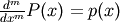
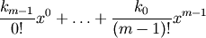
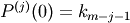

numpy.polyint¶
- numpy.polyint(p, m=1, k=None)¶
Return an antiderivative (indefinite integral) of a polynomial.
The returned order m antiderivative P of polynomial p satisfies  and is defined up to m - 1 integration constants k. The constants determine the low-order polynomial part

of P so that .
Parameters : p : {array_like, poly1d}
Polynomial to differentiate. A sequence is interpreted as polynomial coefficients, see poly1d.
m : int, optional
Order of the antiderivative. (Default: 1)
k : {None, list of m scalars, scalar}, optional
Integration constants. They are given in the order of integration: those corresponding to highest-order terms come first.
If None (default), all constants are assumed to be zero. If m = 1, a single scalar can be given instead of a list.
See also
- polyder
- derivative of a polynomial
- poly1d.integ
- equivalent method
Examples
The defining property of the antiderivative:
>>> p = np.poly1d([1,1,1]) >>> P = np.polyint(p) >>> P poly1d([ 0.33333333, 0.5 , 1. , 0. ]) >>> np.polyder(P) == p True
The integration constants default to zero, but can be specified:
>>> P = np.polyint(p, 3) >>> P(0) 0.0 >>> np.polyder(P)(0) 0.0 >>> np.polyder(P, 2)(0) 0.0 >>> P = np.polyint(p, 3, k=[6,5,3]) >>> P poly1d([ 0.01666667, 0.04166667, 0.16666667, 3. , 5. , 3. ])
Note that 3 = 6 / 2!, and that the constants are given in the order of integrations. Constant of the highest-order polynomial term comes first:
>>> np.polyder(P, 2)(0) 6.0 >>> np.polyder(P, 1)(0) 5.0 >>> P(0) 3.0